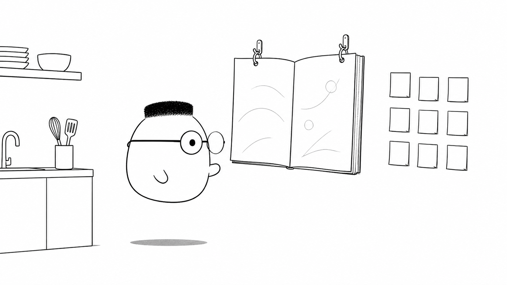
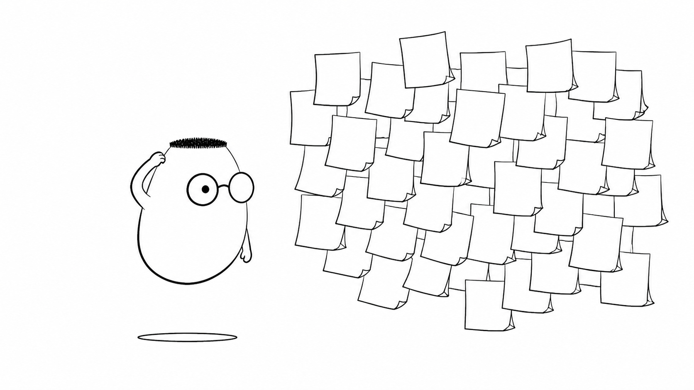
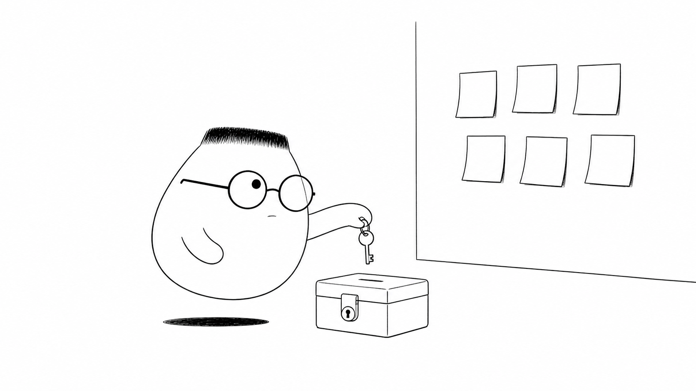

Masalah sehari-hari
config adalah catatan tentang tempat program berjalan. Resep (code) sebaiknya tetap sama. Catatan lokasi berubah sesuai cabang, mesin, dan environment. Jika keduanya tercampur, satu perubahan kecil dapat memaksa kita mengubah resep untuk semua dapur.
Analogi Kuka
Di dinding dapur, Kuka menemukan buku panduan besar. Buku itu berisi resep yang dipakai semua shift. Di sampingnya ada catatan kecil untuk tiap gedung. Catatan itu berisi jam buka dan alamat pemasok.
Resep tidak perlu tahu dapur mana yang sedang memasak. Catatan lokasi memberi tahu detail tempatnya. Kunci lemari kas punya tempat yang lebih tertutup daripada catatan jam buka.
Peta istilah dapur
Buku panduan adalah code. Catatan cabang adalah config. Dapur latihan, dapur uji coba, dan gedung asli adalah environment. Kunci lemari kas adalah secret. Buku panduan yang terpusat adalah sumber config.
Ilustrasi

Satu panduan membantu semua shift bekerja dengan aturan yang sama. Catatan kecil melengkapi panduan tanpa mengubah resep. Susunan ini membuat perubahan lebih mudah dilacak.
Penjelasan konsep
Kekacauan muncul saat setiap orang menempelkan catatan di tempat berbeda. Satu catatan ada di terminal, satu lagi ada di file, dan sisanya tersimpan dalam ingatan seseorang. Ketika satu tempelan lepas, program bisa berjalan dengan config yang salah.

Config punya jenis yang berbeda. Sebagian boleh dibaca banyak orang, seperti jam buka. Sebagian lain harus dibatasi, seperti secret untuk lemari kas. Memisahkan jenis ini membantu kita memilih tempat penyimpanan yang sesuai.
Contoh e-commerce
Toko online memakai satu resep code untuk semua cabang. Config menentukan alamat layanan pembayaran, jam buka, dan nama cabang. Resep tetap sama meski catatan tiap lokasi berbeda.
Jenis config
Config biasa berisi nama aplikasi, port, atau jam buka. Config rahasia berisi password, token, atau secret. Keduanya sama-sama dibutuhkan program, tetapi aksesnya tidak sama.
Sumber config
Sumber config adalah tempat program membaca catatan saat mulai. Satu sumber pusat lebih mudah diperiksa daripada banyak tempelan acak. Perubahan juga dapat dicatat dan ditinjau.
Per lingkungan
Environment latihan dapat memakai alamat pemasok palsu. Environment uji coba memakai layanan pengujian. Gedung asli memakai alamat dan layanan produksi. Resep tetap sama, catatan lokasinya yang berubah.
Keamanan dimulai dari tempat penyimpanan. Kunci lemari kas tidak pernah ditulis di papan umum. Secret tidak boleh masuk ke code, catatan bersama, atau log yang dapat dibaca semua orang.

Menjaga secret
Simpan secret di tempat yang aksesnya terbatas. Berikan hanya kepada proses dan orang yang membutuhkannya. Jika secret bocor, ganti kuncinya dan periksa jejak pemakaiannya.
Diagram alur
Kode mulai dengan membaca catatan dari sumber pusat. Ia mengambil secret dari kotak kunci, lalu menggabungkan keduanya. Setelah config lengkap, server dapat berjalan.
Contoh mini
Resep roti: sama untuk semua cabang Cabang A: buka 07.00, pemasok Jalan A Cabang B: buka 08.00, pemasok Jalan B Cabang C: buka 06.00, pemasok Jalan C
Kartu pos ini membawa satu resep dan tiga catatan cabang. Resep tidak berubah saat alamat pemasok atau jam buka berubah. Itulah batas sederhana antara code dan config.
Ringkasan
- Pisahkan resep (code) dari catatan lokasi (config).
- Simpan config pada sumber pusat agar perubahan mudah dilacak.
- Bedakan config biasa yang boleh terbuka dari secret yang harus tertutup.
- Gunakan catatan berbeda untuk setiap environment tanpa mengganti resep.
- Jangan menempelkan secret di papan umum, code, atau log.
Pertanyaan pemahaman
- Kenapa resep (code) dan catatan lokasi (config) harus dipisah?
- Apa beda catatan yang boleh terbuka dan kunci lemari kas (secret)?
- Apa akibatnya kalau kunci lemari kas ditempel di papan umum?
Mau lebih dalam
Versi teknis membahas cara mengelola config dalam aplikasi dan deployment. Contoh lengkap serta referensi tersedia di sana.